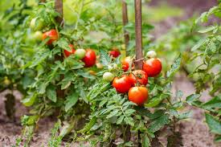
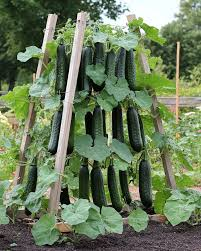
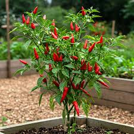

Plants You Can Grow

Tomato
Tomatoes are easy to grow, love the sun, and are perfect for fresh eating or canning.

Cucumber
Cucumbers grow quickly, especially on trellises, and make delicious pickles.

Pepper
Peppers add color and flavor and are easy for beginners. Choose sweet or spicy varieties.
Plant Comparison Table
| Plant | Sunlight | Water Needs |
|---|---|---|
| Tomato | Full Sun | Moderate |
| Cucumber | Full Sun | High |
| Pepper | Full Sun | Low to Moderate |